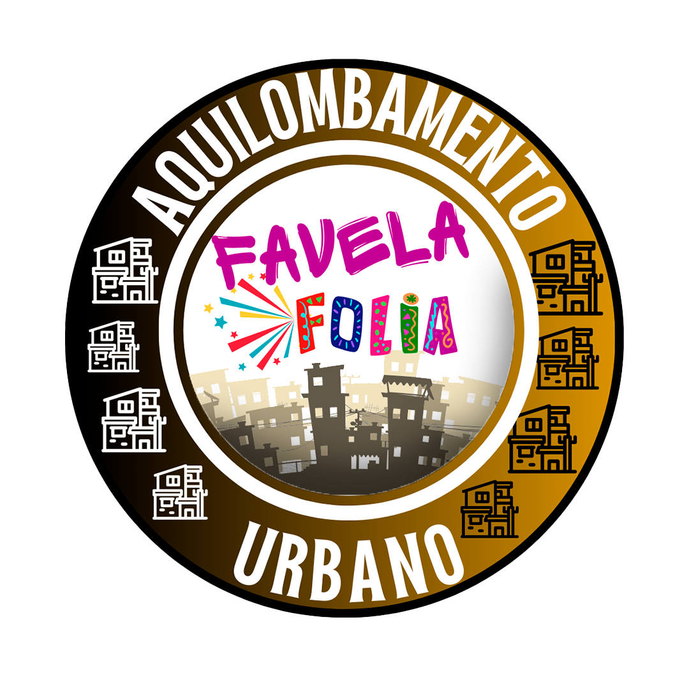
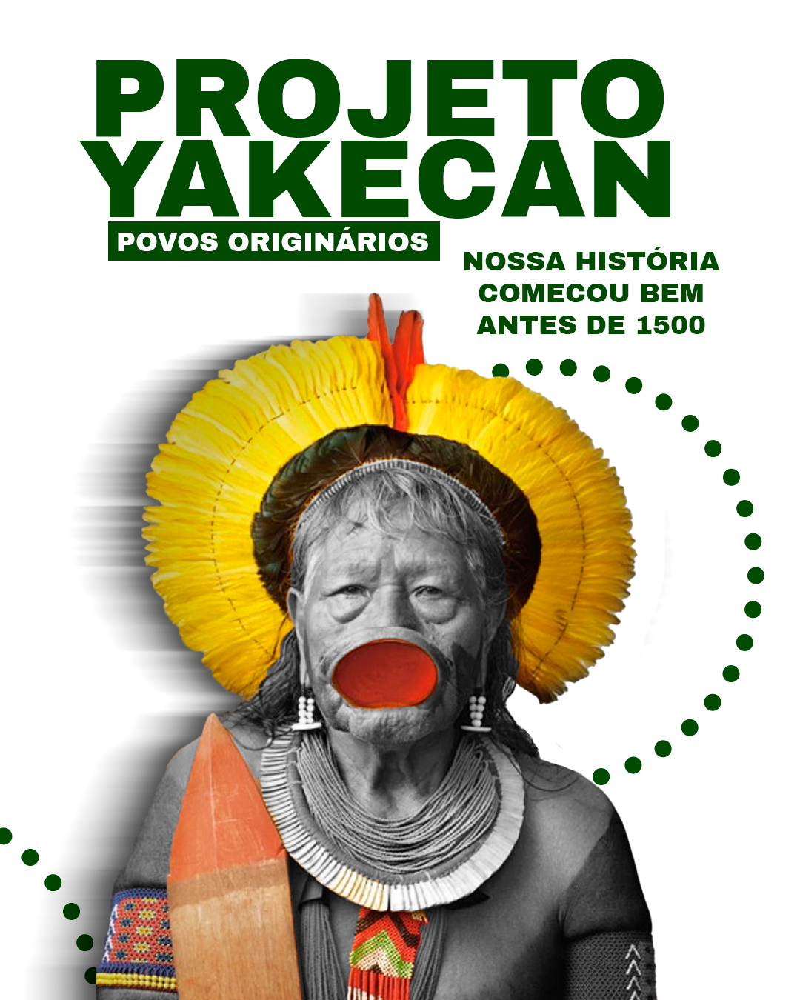
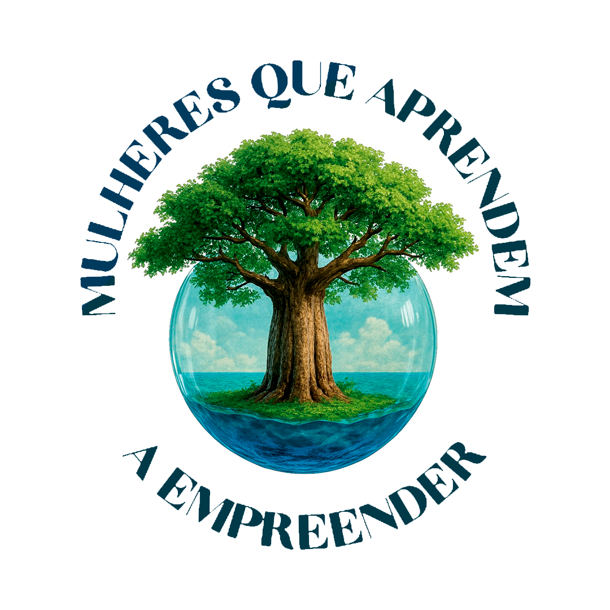
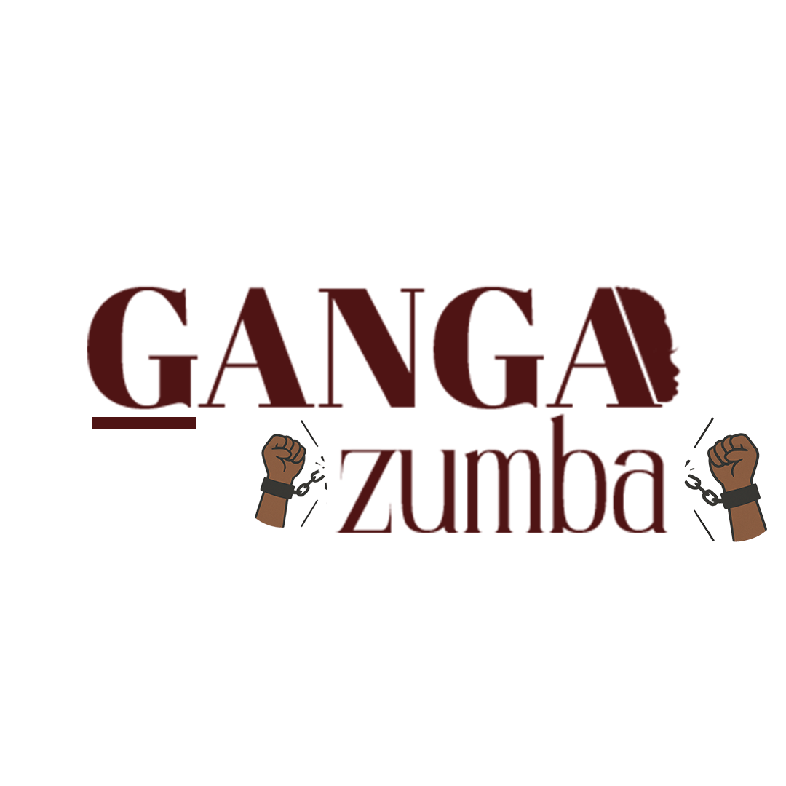
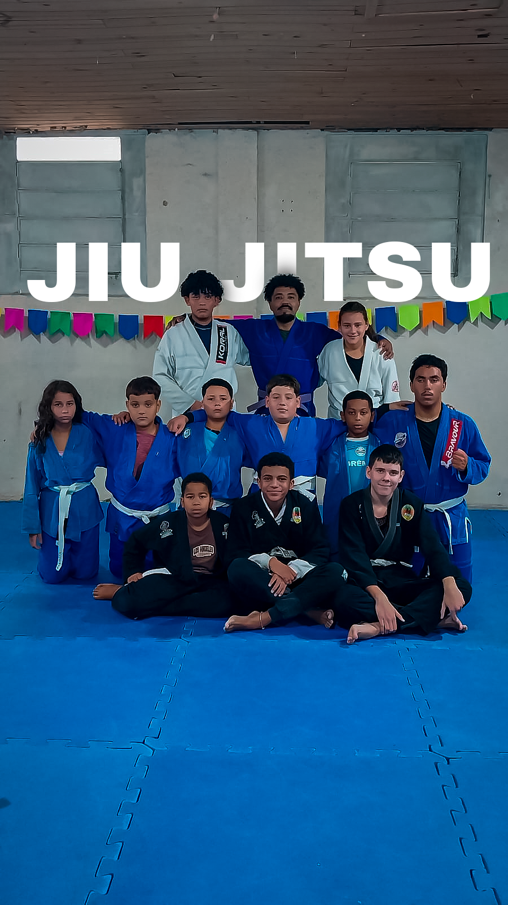
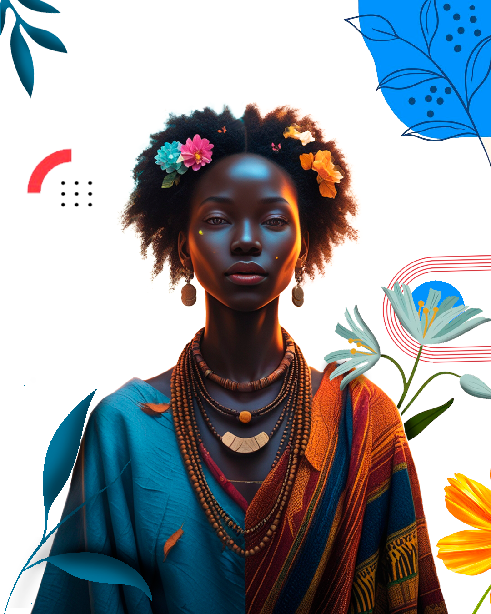

Nossas atividades teatrais se iniciaram como oficinas em 2008, com o objetivo de resgatar e ortalecer os laços entre as familias,
despertando em nossos atendidos uma visão cultural e social. Buscando através desta ferramenta o auto conhecimento trabalhando as h
istórias, memórias afetivas através do lúdico quebrando paradigmas. Em 2017 a Cia teatral se concretizou com a apresentação do
espetáculo musical Alice no país das maravilhas,
reunindo um elenco de 70 pessoas entre crianças e adultos, com a direção do Professor Darlei Nunes..
Banda Percussão Fênix
A banda surgiu por volta do ano de 2016 idealizada por seu presidente Paulo Jorge do Amaral Cardoso (IN MEMORIA),
A banda teve início como oficina de percussão e carnaval tendo a denominação de Banda Marcial Amavtron. A partir de outubro de 2019
a banda teve sua proposta pedagógica alterada e alinhada seguindo o eixo das tradicionais bandas de marciais e de percussão
rudimentar. Com a nova proposta a banda passa a se chamar, Banda de Percussão Fênix. A banda tem como objetivo disseminar entre os jovens
e comunidade o amor pela cultura musical, assim mudando a sua realidade e buscando novas oportunidades. Regente Ewerton de Melo.

Favela Folia
O projeto Favela Folia é uma iniciativa cultural que transforma o Carnaval em um espaço de celebração da periferia com música,
arte, diversidade e protagonismo local promovendo acesso gratuito à cultura e entretenimento de qualidade, diretamente nas
quebradas. Se você é do público, se prepara pra curtir um rolê raiz, com representatividade,
batidão e muita cor! É mais que folia: é resistência, é cultura, é a favela mostrando sua potência.

Projeto Yakecan
Este projeto te como objetivo disseminar e valorizar a cultura e os saberes dos povos originários.
A cultura nativa possui importância fundamental na construção da identidade nacional brasileira.
Ela está presente em inúmeros elementos sendo base da formação cultural, social e ambiental.

Mulheres que Aprendem a Empreender
O Projeto Mulheres que Aprendem a Empreender, é uma iniciativa que visa capacitar e
empoderar mulheres, especialmente da periferia, por meio do empreendedorismo. O projeto oferece cursos práticos, como
costura, padaria e confeitaria, proporcionando às participantes habilidades para gerar renda e alcançar
independência financeira. Além das habilidades técnicas, o projeto enfatiza o fortalecimento da autoestima, a construção de
redes de apoio e o desenvolvimento pessoal das participantes, criando um ambiente de aprendizado e crescimento coletivo.

Ganga Zumba
Este projeto tem como objetivo disseminar e valorizar a cultura e os saberes dos povos originários.
A cultura nativa possui importância fundamental na construção da identidade nacional brasileira.
Ela está presente em inúmeros elementos sendo base da formação cultural, social e ambiental.

Jiu Jitsu
O "Jiu-Jitsu para Todos" é um projeto social que visa promover a inclusão, disciplina e qualidade de vida por meio da prática do
Jiu-Jitsu. Voltado para crianças e adolescentes, o projeto oferece aulas gratuitas, com foco na formação
cidadã, respeito mútuo e desenvolvimento físico e mental. Mais do que um esporte, o Jiu-Jitsu aqui é uma ferramenta de
transformação social.

Estações Negras
O projeto Estações Negras celebra a força, a cultura e a ancestralidade do povo negro por meio de ações culturais, educativas e
esportivas ao longo do ano. Cada "estação" representa um ciclo de atividades que valorizam a identidade negra, combatem o racismo e
promovem o empoderamento nas comunidades. Oficinas, rodas de
conversa, apresentações artísticas e práticas esportivas como o Jiu-Jitsu integram essa jornada de resistência e transformação
social.